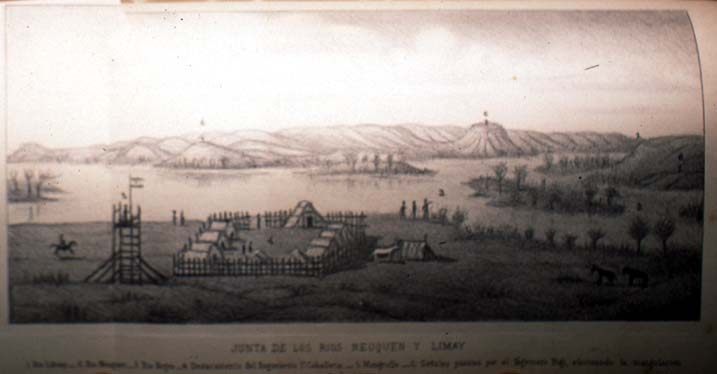

|
|  |
|
Manuel José Olascoaga, Junta de los ríos Neuquén y Limay
|
Yet it is in the second half of the 1870s, and more decisively in the 1880s, that a shift in the protagonists and in the content and social functions of the natural and exact sciences occurs, following the graduation of the first generations of national geographers, naturalists and anthropologists from the faculties and museums created and directed until then by foreign sages (with the exception of Brazil´s National Museum, where nonetheless the influence of foreign scientific staff was likewise predominant until the very end of the Imperial state). The change was perhaps most visible in Argentina, where a new generation trained in natural sciences and medicine rather than history and law like their letrado predecessors, came to power in 1880 surrounding the new strongman General Julio A. Roca. The crucial event in this generational turnover, which also resulted in the final consolidation of a powerful and centralised state authority, was the military conquest and occupation of the southern Pampas and Patagonia that followed the 'Desert Campaign' of 1879, a triumph, in the words of Estanislao Zeballos, a principal spokesman of the new order and president of the Argentine Geographical Institute, founded in the same year, of 'science over barbarism'. Mapping and collecting the 'new territories' of the Republic, were activities coextensive with their military occupation and the subjugation, slaughter and deportation of their indigenous inhabitants: science and the military, parallel to the emergence of new positivist, social darwinist and eugenic paradigms of knowledge, entered into a new hegemonic alliance whose effects would endure well into the twentieth century. Manuel José Olascoaga´s Estudio topográfico de La Pampa y Río Negro, the state-funded account of the military campaign of 1882, which included a vast array of landscape sketches and maps of the newly conquered lands, is one of the most important textual and visual monuments of this scientifico-military re-occupation of national territory, or re-territorialisation of the state.
|